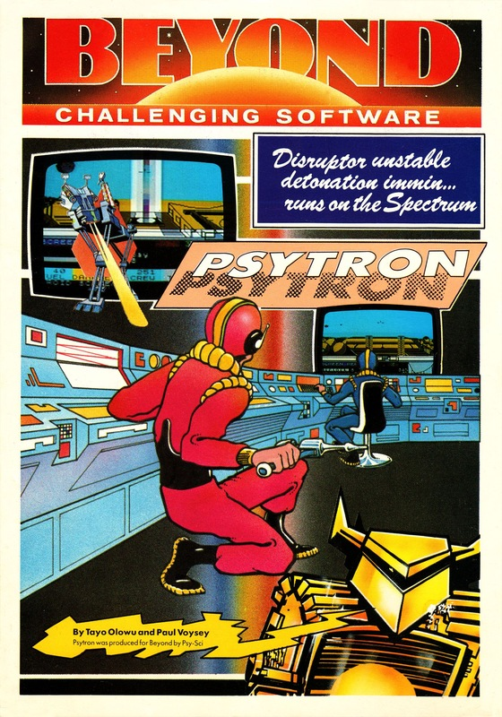
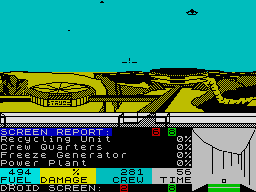
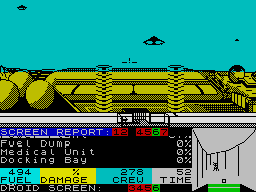
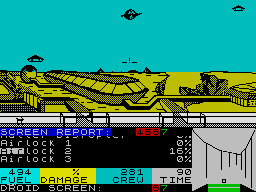

Psytron


{kind=link}

| Publisher: | Beyond |
| Price: | £7.95 |
| Year: | 1984 |
| Source: | CRASH, Issue 5 |

After a less than auspicious start with Space Station Zebra (reviewed last month) Beyond Software (part of the EMAP group who also own Computer & Video Games magazine) have really launched themselves with this colossal arcade strategy game. ‘A program which makes other programmers gasp,’ it says on the excellent packaging — and perhaps it will.
Psytron comes in a large box containing the cassette, a competition entry form (more later) and a very detailed 20-page booklet explaining how the game is played, and what Psytron is. It looks rather daunting but is essential reading. However it can be read in stages until all the six levels of the game have been absorbed. Psytron is not a game for a few moments play — it will take ages.

The action all takes place on a huge base on the planet of Betula 5. The planet’s atmosphere is not compatible with humanity, so the base is sealed within its own life support system. The base has an inner ring from which radiate the various surface installations. These are the medical centre, freezetime generator, oxygen unit, docking bay and teleport centre, recycling unit, pleasure dome, crew quarters, fuel dump, power plant, matter disruptor and the food store. The game provides 10 screens which are views of the base, seen from the centre and all the way round.
The Psytron is in sole charge of Betula 5, and as the Psytron, you will have to undertake everything to protect the base. Shooting aliens out of the skies and dealing with the remote droids they drop which run around the inner ring to blow up the vital airlocks make up the arcade component, but repairing facilities and deciding what installations to sacrifice at critical moments makes up the strategy element.

Psytron is a game of six levels of progressive difficulty which have been designed to take you into the game step by step, piling more and more responsibility on your shoulders. Each level must be mastered before the next is attempted. The computer looks at your last five scores and calculates an average — if it’s over the passmark then you can move on to the next level. The computer keeps a service record of your achievement which may be saved and reloaded after game load. This is all important because the service record is used in compiling your overall score for the final level. Beyond are running a competition with a prize of a QL computer for the winner. If someone conquers the game completely, then they will win, but it is considered almost impossible to survive for an hour on level 6, which is really required to get the special code. The competition closes on November 30, and if not already won, the prize will go to the highest scorer at that time.
The screen display is split, with a little over half the top being the monitor views of the base (10 in all). These views are drawn in detailed black line and cross hatching with a yellow strip for the ground and a pale blue for the sky. It all looks like a comic drawing. Below is the white and black ringway with airlock access. In this ringway enemy droids are dropped and they can be seen running along to their randomly selected detonation points. Below is the screen report which details what section of the base you are seeing, and updates damage and status reports. Other info provided includes fuel levels, percentage of damage, crew status and time.

At the bottom right-hand corner is a 3D view of the ringway looking along it. This will show a droid on the run. Your pursuit droid also shows up on the ringway and may be guided to chase the enemy droid until it comes into view on the 3D panel. It must be destroyed by fire before it reaches its destination.
Meanwhile, overhead enemy saucers are constantly attacking the base from all directions, dropping bombs which explode colourfully. A gun sight is provided. The enemy saucers are animated in 3D as well.
Describing this game in a review would take pages, and there is a great deal more to playing it than we, have said here — after all, it takes 20 pages for the producers to describe it!
CRITICISM
‘Psytron is a fantastic arcade type strategy game. The graphics are very good, with alien ships in the sky above the excellent views of your base. Challenging, addictive and difficult are words which sum up this game. In fact, the word game is almost an insult to this Beyond scenario. As there are several tasks to be done in maintaining the base, learned at the various levels, Psytron has plenty of lasting appeal! Don’t let the useful booklet put you off, you can load and play Psytron straight away although the advice it contains is more essential on the higher levels. Side B of the cassette has a glimpse of their next big game, the adventure Lord of Midnight.’
‘The rapid access to any of the 10 screens, combined with the natural change of views if your gunsight leaves the screen, makes for a very exciting background against which to play this furious and tiring game. The graphics are superb, oddly not very colourful, but the way they have been done is very convincing. At this stage of reviewing the game it is impossible to say what the higher levels are like — it will be some time before I ever get up there! But if the three I have so far seen are anything to go by, it’s a great game all the way and very addictive as well.’
‘This game builds up your skill qualities until you are ready for the grand finale — a very good idea. The graphics move about realistically and in full perspective, the 10 segments of the space station are all very well drawn. The upward scrolling information on the Screen Report is great, as you can see what damage is occurring while you’re fighting off the alien saucers. Colour and sound have been used well, although there isn’t a great deal of colour in the game itself. Your last five scores are taken and averaged for promotion, which is a marvellous idea, although it can be disheartening if one of them happens to be very high. Psytron is fantastic fun to play and the difficulty of each level and the fact that there are six levels means that it is going to take a long time to master, making it dangerously addictive. Definitely a thousand percent better than Space Station Zebra, and overall breathtaking and overwhelming.’
COMMENTS
| Control keys: | (droid) Q=forward, A=turn around, M to fire (Skywatch) Q/A up/down, O/P left/right, M to fire, N=fast scan, S=skywatch mode, D=droid mode |
| Joystick: | Kempston |
| Keyboard play: | Very responsive |
| Use of colour: | Original and very well used |
| Graphics: | Excellent |
| Sound: | Well used |
| Skill levels: | 6 |
| Lives: | 1 |
| Screens: | 10 |
| General rating: | Well planned, designed and implemented very addictive and overall excellent value for money. Highly recommended. |
| Use of computer: | 85% |
| Graphics: | 93% |
| Playability: | 88% |
| Getting started: | 98% |
| Addictive qualities: | 91% |
| Value for money: | 88% |
| Overall: | 91% |